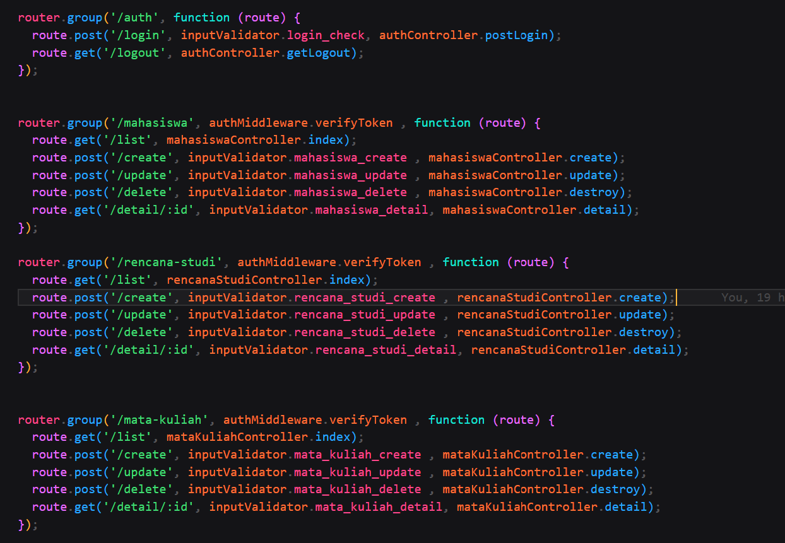

Sebelum menginstall module2 yang dibutuhkan anda harus memakai NodeJs v20.11.0
Disini saya menggunakan Express Js sebagai backend nya dan juga menggunakan beberapa module antaranya bycrpt (untuk hash password) lalu ada jsonwebtoken (sebagai token untuk login) lalu ada mysql2 (untuk keperluan database nya) lalu ada express-validator (untuk keperluan validasi)
Sehingga setiap Rest API yang akan di gunakan frontend dari pihak ke tiga akan di ambil melalui express js sehingga nanti di frontend akan menggunakan ip localhost untuk pemanggilan rest api nya.
Setelah menjalankan aplikasi dengan Npm Start anda bisa mengimport contoh postman yang terdapat di folder tutorial dengan nama "Backend MCM Test.postman_collection.json" setiap anda mau menjalankan api pastikan anda login dengan role Admin sehingga bisa mengakses semua route jika anda login sebagai mahasiswa maka anda tidak bisa menggunakan semua route. untuk semua password saya defaultkan sebagai = "admin123"
Note: jika anda ingin membuat rencana studi maka anda harus menggunakan route http://127.0.0.1:8000/rencana-studi/create dengan memasukan id dari mahasiswa dan juga id dari mata kuliah. Aplikasi akan otomatis mendeteksi jika mahasiswa sudah mendaftar 3 matkul berbeda dan juga setiap matkul akan hanya memiliki 4 mahasiswa berbeda jadi akan ada return error jika beberapa kondisi tersebut tidak terpenuhi.